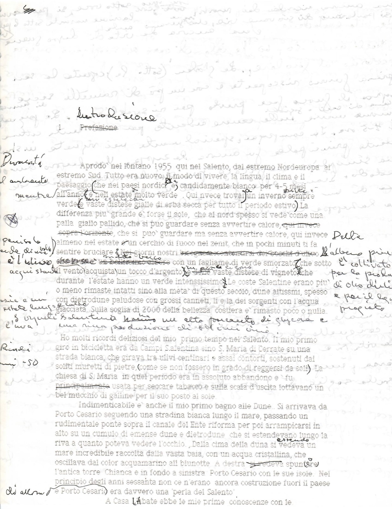
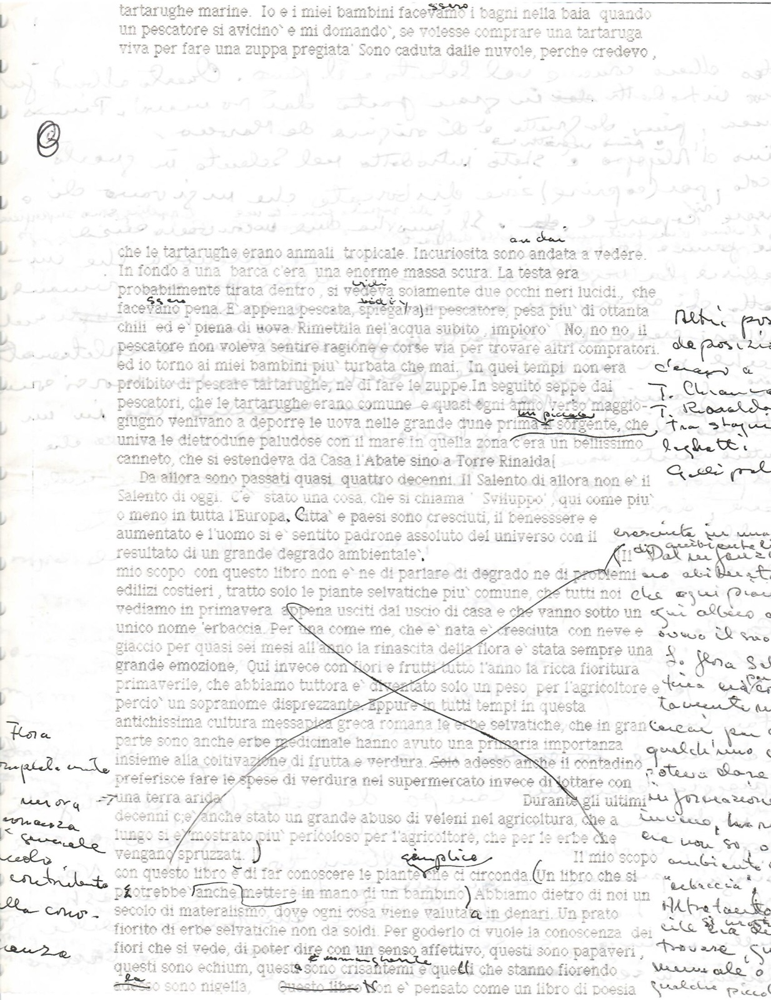
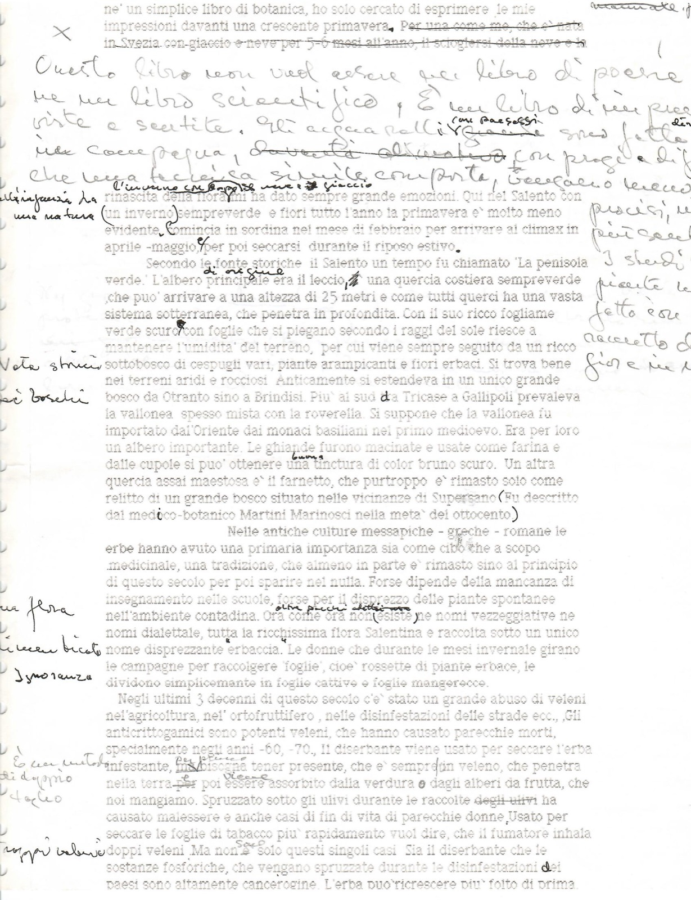
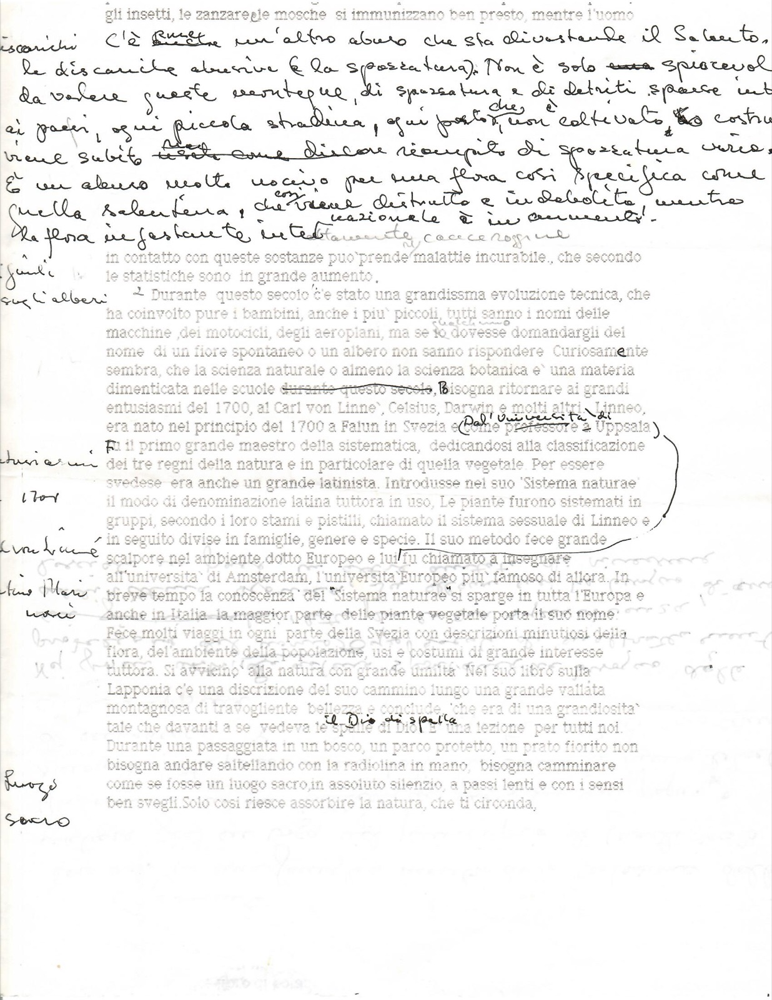
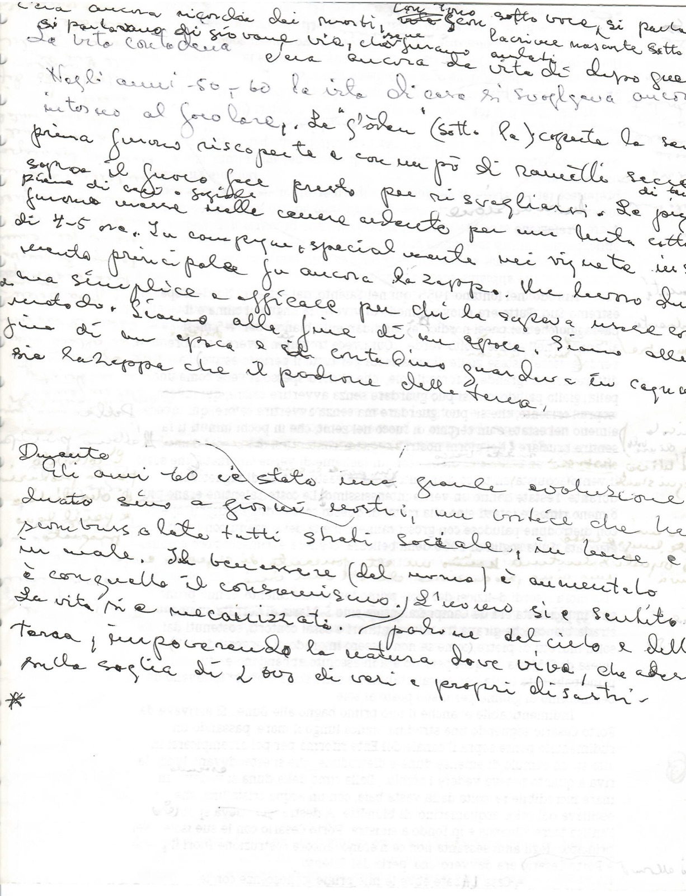
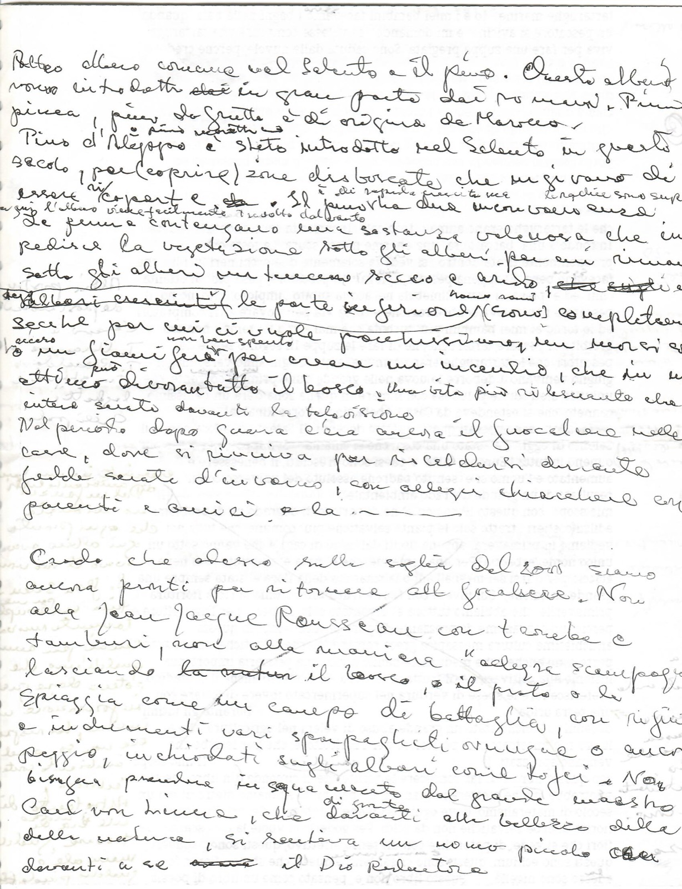

Prefazione (bozza)
- Categoria
- Saggistica
- Fogli
- 6
- Tag
- Primavera del Salento
Foglio 1 di 6

[dattiloscritto con correzioni; in alto: 1 [cancellato: Prefazione] [aggiunto a mano: Introduzione]] Aprodo nel lontano 1955 qui nel Salento, dal estremo Nordeuropa al estremo Sud. Tutto era nuovo, il modo di vivere, la lingua, il clima e il paesaggio (che nei paesi nordici era candidamente bianco per 4-5 mesi all'anno e nell'estate molto verde). Qui invece trovai un inverno sempre verde e vaste distese gialle di erba secca per tutto il periodo estivo. La differenza più grande è forse il sole, che al nord spesso si vede come una palla giallo pallido, che si può guardare ma senza avvertire calore, qui invece almeno nel estate è un cerchio di fuoco nel zenit, che in pochi minuti ti fa sentire bruciare […] con un fogliame di verde smorzato che sotto il vento acquista un tocco d'argento […] vaste distese di vigneto che durante l'estate hanno un verde intensissimo. Le coste Salentine erano più o meno rimaste intatti sino alla metà di questo secolo, dune altissimi, spesso con dietrodune paludose con grossi canneti, lì e là dei sorgenti con l'acqua giacciata. Sulla soglia di 2000 della bellezza costiera è rimasto poco o nulla. Ho molti ricordi deliziosi del mio primo tempo nel Salento. Il mio primo giro in bicicletta era da Campi Salentina sino S. Maria di Cerrate su una strada bianca, che girava tra ulivi centinari e assai contorti, sostenuti dai soliti muretti di pietre (come se non fossero in grado di reggersi da soli). La chiesa di S. Maria in quel periodo era in assoluto abbandono e fu usata per seccare tabacco e sulla scala d'uscita lottavano un bel mucchio di galline per il suo posto al sole. Indimenticabile è anche il mio primo bagno alle Dune. Si arrivava da Porto Cesario seguendo una stradina bianca lungo il mare, passando un rudimentale ponte sopra il canale del Ente riforma per poi arrampicarsi in alto su un cumulo di emense dune e dietrodune che si estendevano lungo la riva a quanto poteva vedere l'occhio. Dalla cima della duna si vedeva un mare incredibile raccolto dalla vasta baia, con un acqua cristallina, che oscillava dal color acquamarino al blunotte. A destra spuntava l'antica torre Chianca e in fondo a sinistra Porto Cesario con le sue isole. Nel principio degli anni sessanta non ce n'erano ancora costruzioni fuori il paese e Porto Cesario era davvero una 'perla del Salento' A Casa L'Abate ebbe le mie prime conoscenze con le… [a margine, a mano, lettura incerta: Durante l'autunno… mentre / penisola… è l'ulivo / Della [l'albero più] coltivato per la produzione di olio d'oliva e per il legno pregiato / i vigneti Salentini hanno un alto [percentuale] di glucosio e una ricca produzione di ottimi vini / Ricordi anni -50 / di allora] [[…] = punti non letti con sicurezza nella scansione]
Foglio 2 di 6

[dattiloscritto con note a mano; a margine sinistro e destro note tagliate dal bordo della scansione] tartarughe marine. Io e i miei bambini facev[amo → essero] i bagni nella baia quando un pescatore si avvicinò e mi domandò, se volesse comprare una tartaruga viva per fare una zuppa pregiata. Sono caduta dalle nuvole, perche credevo, [spazio bianco; in trasparenza la scrittura a mano del retro] che le tartarughe erano animali tropicale. Incuriosita sono andata a vedere. In fondo a una barca c'era una enorme massa scura. La testa era probabilmente tirata dentro, si vedeva [aggiunto: vidi] solamente due occhi neri lucidi, che face[vano → ssero] pena. È appena pescata, spiegava il pescatore, pesa più di ottanta chili ed è piena di uova. Rimettila nell'acqua subito, imploro. No, no no il pescatore non voleva sentire ragione e corse via per trovare altri compratori. ed io torno ai miei bambini più turbata che mai. In quei tempi non era proibito di pescare tartarughe, ne di fare le zuppe. In seguito seppe dai pescatori, che le tartarughe erano comune e quasi ogni anno verso maggio-giugno venivano a deporre le uova nelle grande dune prima [aggiunto: di un piccolo] sorgente, che univa le dietrodune paludose con il mare. In quella zona c'era un bellissimo canneto, che si estendeva da Casa l'Abate sino a Torre Rinalda. Da allora sono passati quasi quattro decenni. Il Salento di allora non è il Salento di oggi. C'è stato una cosa, che si chiama 'Sviluppo', qui come più o meno in tutta l'Europa. Città e paesi sono cresciuti, il benessere è aumentato e l'uomo si è sentito padrone assoluto del universo con il resultato di un grande degrado ambientale. [passo barrato con una grande croce:] Il mio scopo con questo libro non è ne di parlare di degrado ne di problemi edilizi costieri, tratto solo le piante selvatiche più comune, che tutti noi vediamo in primavera appena usciti dal uscio di casa e che vanno sotto un unico nome 'erbaccia'. Per una come me, che è nata e cresciuta con neve e giaccio per quasi sei mesi all'anno la rinascita della flora è stata sempre una grande emozione. Qui invece con fiori e frutti tutto l'anno la ricca fioritura primaverile, che abbiamo tuttora è diventato solo un peso per l'agricoltore e perciò un sopranome disprezzante. Eppure in tutti tempi in questa antichissima cultura messapica greca romana le erbe selvatiche, che in gran parte sono anche erbe medicinale hanno avuto una primaria importanza insieme alla coltivazione di frutta e verdura. [cancellato: Solo] adesso anche il contadino preferisce fare le spese di verdura nel supermercato invece di lottare con una terra arida. Durante gli ultimi decenni c'è anche stato un grande abuso di veleni nel agricoltura, che a lungo si è mostrato più pericoloso per l'agricoltore, che per le erbe che vengano spruzzati. [fine del passo barrato] Il mio scopo con questo libro è di far conoscere le piante che ci circonda. (Un libro [aggiunto: semplice] che si potrebbe anche mettere in mano di un bambino) Abbiamo dietro di noi un secolo di materialismo, dove ogni cosa viene valutata in denari. Un prato fiorito di erbe selvatiche non da soldi. Per goderlo ci vuole la conoscenza dei fiori che si vede, di poter dire con un senso affettivo, questi sono papaveri, questi sono echium, questi sono crisantemi [aggiunto: e margherite] e quelli che stanno fiorendo adesso sono nigella. [cancellato: Questo libro] Non è pensato come un libro di poesia [a margine destro, tagliato: Altri posti di deposizione … T. Chianca, T. Rinalda, tra stagni, laghetti … ; e una nota lunga: … la flora Salentina … cercai per … qualcuno che potesse darmi informazioni … "erbaccia" … manuale …] [a margine sinistro: Flora … conoscenza generale … contribuito alla conoscenza [?]]
Foglio 3 di 6

né un simplice libro di botanica, ho solo cercato di esprimere le mie impressioni davanti una crescente primavera. [cancellato: Per una come me, che è nata in Svezia con giaccio e neve per 5-6 mesi all'anno, il sciogliersi della neve e la] [aggiunto a mano:] Questo libro non vuol essere un libro di poesie né un libro scientifico, è un libro di impressioni viste e sentite. Gli acquarelli [aggiunto: con paesaggi] sono fatti in campagna, [cancellato: …] con pregi e difetti che una tecnica simile comporta, […] [la riga continua oltre il bordo] [aggiunto: l'inverno con troppa neve e giaccio] rinascita della flora mi ha dato sempre grande emozioni. Qui nel Salento con un inverno sempreverde e fiori tutto l'anno la primavera è molto meno evidente. Comincia in sordina nel mese di febbraio per arrivare al climax in aprile-maggio, e per poi seccarsi durante il riposo estivo. Secondo le fonte storiche il Salento un tempo fu chiamato 'La penisola verde'. L'albero principale [aggiunto: di origine] era il leccio, una quercia costiera sempreverde, che può arrivare a una altezza di 25 metri e come tutti querci ha una vasta sistema sotterranea, che penetra in profondità. Con il suo ricco fogliame verde scuro con foglie che si piegano secondo i raggi del sole riesce a mantenere l'umidità del terreno, per cui viene sempre seguito da un ricco sottobosco di cespugli vari, piante arampicanti e fiori erbaci. Si trova bene nei terreni aridi e rocciosi. Anticamente si estendeva in un unico grande bosco da Otranto sino a Brindisi. Più al sud da Tricase a Gallipoli prevaleva la vallonea spesso mista con la roverella. Si suppone che la vallonea fu importato dal'Oriente dai monaci basiliani nel primo medioevo. Era per loro un albero importante. Le ghiande furono macinate e usate come farina e dalle cupole si può ottenere una [aggiunto: buona] tinctura di color bruno scuro. Un altra quercia assai maestosa è il farnetto, che purtroppo è rimasto solo come relitto di un grande bosco situato nelle vicinanze di Supersano (Fu descritto dal medico-botanico Martini Marinosci nella metà del ottocento). Nelle antiche culture messapiche - greche - romane le erbe hanno avuto una primaria importanza sia come cibo che a scopo medicinale, una tradizione, che almeno in parte è rimasto sino al principio di questo secolo per poi sparire nel nulla. Forse dipende della mancanza di insegnamento nelle scuole, forse per il disprezzo delle piante spontanee nell'ambiente contadina. Ora come ora non esiste [aggiunto: oltre pochi dialettali] ne nomi vezzeggiative ne nomi dialettale, tutta la ricchissima flora Salentina è raccolta sotto un unico nome disprezzante "erbaccia". Le donne che durante le mesi invernale girano le campagne per raccogliere 'foglie', cioè rossette di piante erbace, le dividono simplicemente in foglie cattive e foglie mangerecce. Negli ultimi 3 decenni di questo secolo c'è stato un grande abuso di veleni nell'agricoltura, nel ortofruttifero, nelle disinfestazioni delle strade ecc. Gli anticrittogamici sono potenti veleni, che hanno causato parecchie morti, specialmente negli anni -60, -70. Il diserbante viene usato per seccare l'erba infestante, [cancellato: ma] [aggiunto: per questo [?]] bisogna tener presente, che è sempre un veleno, che penetra nella terra [cancellato: per] poi [aggiunto: viene] essere assorbito dalla verdura e dagli alberi da frutta, che noi mangiamo. Spruzzato sotto gli ulivi durante le raccolte [cancellato: degli ulivi] ha causato malessere e anche casi di fin di vita di parecchie donne. Usato per seccare le foglie di tabacco più rapidamente vuol dire, che il fumatore inhala doppi veleni. Ma non [è → sono] solo questi singoli casi. Sia il diserbante che le sostanze fosforiche, che vengano spruzzate durante le disinfestazioni dei paesi sono altamente cancerogine. L'erba può ricrescere più folto di prima, [a margine sinistro: all'infanzia ha una natura [?] / Nota storica sui boschi / una flora … bistrattata [?] / Ignoranza / È un metodo di doppio taglio / Troppi veleni] [a margine destro, tagliato: … I semi di piante … fatto … raccolto di fiori …]
Foglio 4 di 6

gli insetti, le zanzare, le mosche si immunizzano ben presto, mentre l'uomo [aggiunto a mano su più righe:] C'è [aggiunto: ancora] un'altro abuso che sta devastando il Salento, le discariche abusive (e la spazzatura). Non è solo spiacevole da vedere queste montagne di spazzatura e di detriti sparse intorno ai paesi, ogni piccola stradina, ogni posto che non è coltivato, o costruito viene subito [cancellato: …] riempito di spazzatura varia. È un abuso molto nocivo per una flora così specifica come quella salentina, che viene distrutta e indebolita, mentre la flora infestante [aggiunto: nazionale] è in aumento! - […] in contatto con queste sostanze può prende malattie incurabile, che secondo le statistiche sono in grande aumento. Durante questo secolo c'è stato una grandissima evoluzione tecnica, che ha coinvolto pure i bambini, anche i più piccoli, tutti sanno i nomi delle macchine, dei motocicli, degli aeroplani, ma se lo dovesse domandargli [aggiunto: qualcuno] del nome di un fiore spontaneo o un albero non sanno rispondere. Curiosamente sembra, che la scienza naturale o almeno la scienza botanica è una materia dimenticata nelle scuole [cancellato: durante questo secolo]. Bisogna ritornare ai grandi entusiasmi del 1700, al Carl von Linné, Celsius, Darwin e molti altri. Linneo, era nato nel principio del 1700 a Falun in Svezia e [cancellato: come professore a] [aggiunto: dall'Università di] Uppsala fu il primo grande maestro della sistematica, dedicandosi alla classificazione dei tre regni della natura e in particolare di quella vegetale. Per essere svedese era anche un grande latinista. Introdusse nel suo 'Sistema naturae' il modo di denominazione latina tuttora in uso. Le piante furono sistemati in gruppi, secondo i loro stami e pistilli, chiamato il sistema sessuale di Linneo e in seguito divise in famiglie, genere e specie. Il suo metodo fece grande scalpore nel ambiente dotto Europeo e lui fu chiamato a insegnare all'università di Amsterdam, l'università Europeo più famoso di allora. In breve tempo la conoscenza del "Sistema naturae" si sparge in tutta l'Europa e anche in Italia la maggior parte delle piante vegetale porta il suo nome. Fece molti viaggi in ogni parte della Svezia con descrizioni minutiosi della flora, del'ambiente della popolazione, usi e costumi di grande interesse tuttora. Si avvicinò alla natura con grande umiltà. Nel suo libro sulla Lapponia c'è una discrizione del suo cammino lungo una grande vallata montagnosa di travolgente bellezza e conclude, 'che era di una grandiosità tale che davanti a se vedeva le spalle di Dio' [aggiunto: il Dio di spalle]. È una lezione per tutti noi. Durante una passaggiata in un bosco, un parco protetto, un prato fiorito non bisogna andare saltellando con la radiolina in mano, bisogna camminare come se fosse un luogo sacro, in assoluto silenzio, a passi lenti e con i sensi ben svegli. Solo così riesce assorbire la natura, che ti circonda, [a margine sinistro: Discariche / [?] sugli alberi / [?] 1700 / C. von Linné / Martino Marinosci / Luogo sacro]
Foglio 5 di 6

[interamente a mano, sopra la trasparenza del dattiloscritto del retro; la scrittura esce dal bordo destro della scansione: trascrizione PARZIALE e incerta] c'era ancora ricordi dei morti, [con tono?] sotto voce, si parlava […] si parlavano di giovane vite, che furono andati […] lacrime nascoste sotto […] La vita contadina […] c'era ancora la vita di dopo gue[rra] […] Negli anni -50, -60 la vita di casa si svolgeva ancora intorno al focolare. Le "glöden" [?] (sotto la […]) coperte la se[ra] prima furono riscoperte e con un pò di ramelli secchi sopra il fuoco fece presto per risvegliarsi. Le pi[gnate?] di terracotta furono messe nelle cenere ardente per una lenta cottura di 4-5 ore. In campagna, specialmente nei vigneti, i[l] […] utensile principale fu ancora la zappa. Un lavoro du[ro] […] una simplice e efficace per chi la sapeva usare […] metodo. Siamo alla fine di un epoca, di un'epoca contadina [?]. Siamo alla fine […] sia la zappa che il padrone della terra […] guardiano [?] e in campagna […] Durante gli anni 60 c'è stato una grande evoluzione […] durato sino a giorni nostri, un evoluzione che ha […] sconvolto tutti strati sociale, in bene e in male. Il benessere (del momento) è aumentato e con quello il consumismo. L'uomo si è sentito […] la vita si è meccanizzata […] padrone del cielo e della terra, impoverendo la natura dove viva, che adesso sulla soglia di 2000 di veri e propri disastri. *
Foglio 6 di 6

[interamente a mano, tagliata sul bordo destro: trascrizione PARZIALE e incerta] Un altro albero comune nel Salento è il pino. Questo albero [è stato] introdotto [cancellato: stat] in gran parte dai romani. Pinus pinea, pino da frutto è di origine del Marocco [?]. Pino d'Aleppo [aggiunto: o pino marittimo] è stato introdotto nel Salento in questo secolo, per (coprire) zone disboscate che sugiravano [?] di essere [ri]coperte. Il pino ha una inconvenienza [aggiunto: è di rapida crescita ma le radici sono superficiali, per cui l'albero viene facilmente travolto dal vento]. Le penne contengano una sostanza velenosa che impedisce la vegetazione sotto gli alberi, per cui rimane sotto gli alberi un terreno secco e arido. [cancellato: …] Gli alberi cresciuti [aggiunto: hanno rami?] le parte inferiore (sono) completamente secche per cui ci vuole poco [aggiunto: un mozzicone [?]] o un fiammifero [aggiunto: acceso] per creare un incendio, che in un attimo divora tutto il bosco. Una vita più rilassante che […] intere serate davanti la televisione. Nel periodo dopo guerra c'era ancora il focolare nelle case, dove si riuniva per riscaldarsi durante le fredde serate d'inverno, con allegri chiacchiere con parenti e amici, e la — Credo che alcuno sulla soglia del 2000 siamo ancora pronti per ritornare al focolare [?]. Non alla Jean Jacques Rousseau con [tende?] e tamburi, non alla maniera "allegre scampagnate" lasciando [cancellato: la natura] il bosco, il prato o la spiaggia come un campo di battaglia, con rifiuti e indumenti vari sparpagliati ovunque o ancora peggio, inchiodati sugli alberi come trofei. Noi bisogna prendere insegnamento dal grande maestro Carl von Linné, che davanti alle bellezze [aggiunto: di grande] della natura, si sentiva un uomo piccolo che davanti a se [cancellato: …] il Dio Redentore [?].
Documentazione digitale
Documentazione e codifica dell'ITEM: